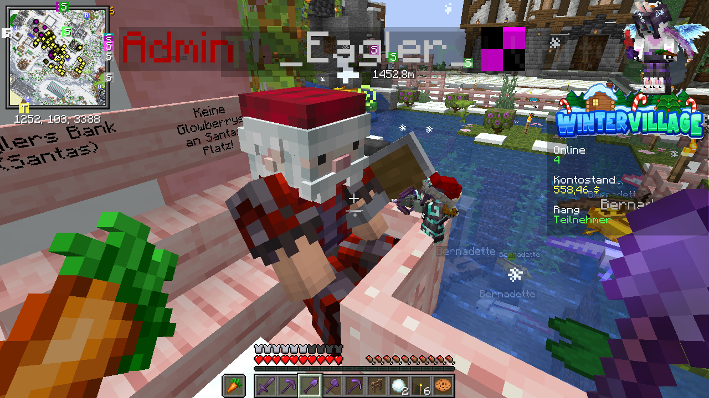
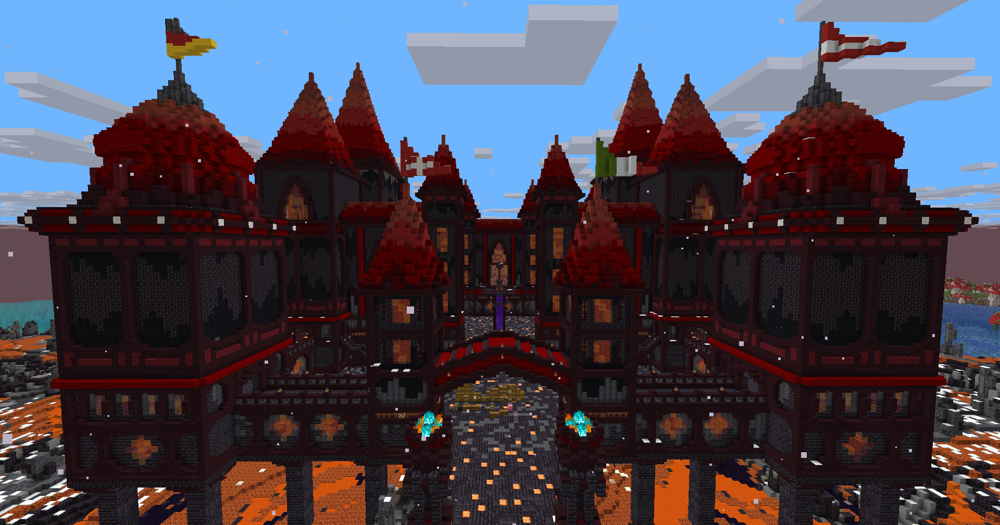
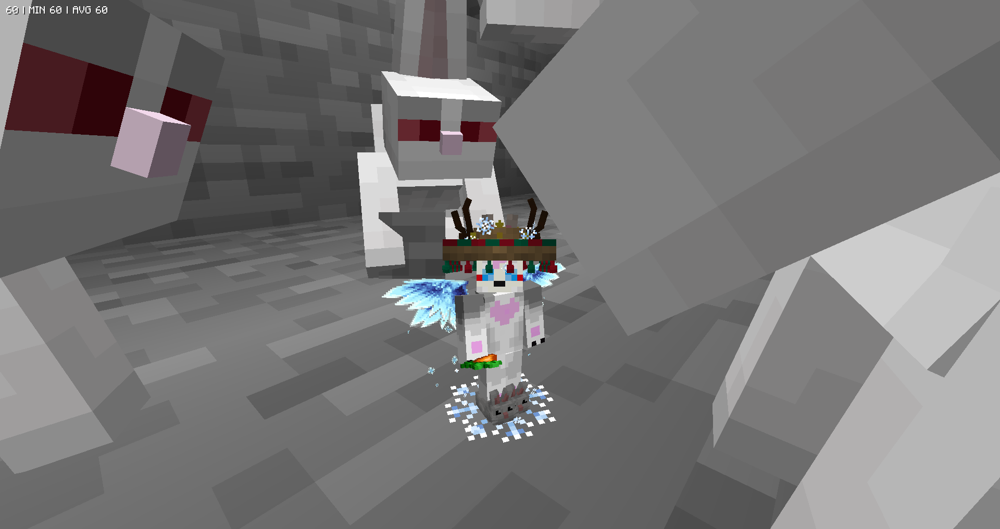

Willkommen beim Winter Village 9!
Unser jährliches Minecraft-Bauprojekt geht in die neunte Runde. Seid dabei und baut mit uns ein episches Winterdorf!
Mehr erfahrenWas ist das Winter Village?
Gemeinschaft. Kreativität. Winter.
Das Winter Village ist ein Community-Projekt, bei dem es darum geht, gemeinsam ein riesiges, winterliches Dorf in Minecraft zu erschaffen.
Content Creator und Community-Mitglieder bauen Hand in Hand, tauschen sich aus und erschaffen unvergessliche Momente.
Das Wildcard-System
Content Creator erhalten durch ihre Spielzeit Wildcards, um ihre Community auf die Whitelist zu setzen.
Auch reguläre Teilnehmer können sich durch Spielzeit Wildcards verdienen und ihre Freunde auf den Server einladen.
Projekt-Features
Shop & Economy
Ein vollwertiges Wirtschaftssystem mit Spieler-Shops und Geldtransfer.
Welt-Management
Eigene Farmwelten (Nether, End, Overworld), die regelmäßig resettet werden, und eine geschützte Bauwelt.
Adventskalender
Tägliche Belohnungen mit "Special Items", die einzigartige Funktionen besitzen.
Plot & Home System
Grundstücksschutz und Teleport-Punkte (/home, public locations, /tpa).
Galerie
Hier könnt ihr die schönsten Bauten und Momente aus den letzten Jahren und dem aktuellen Projekt sehen.




